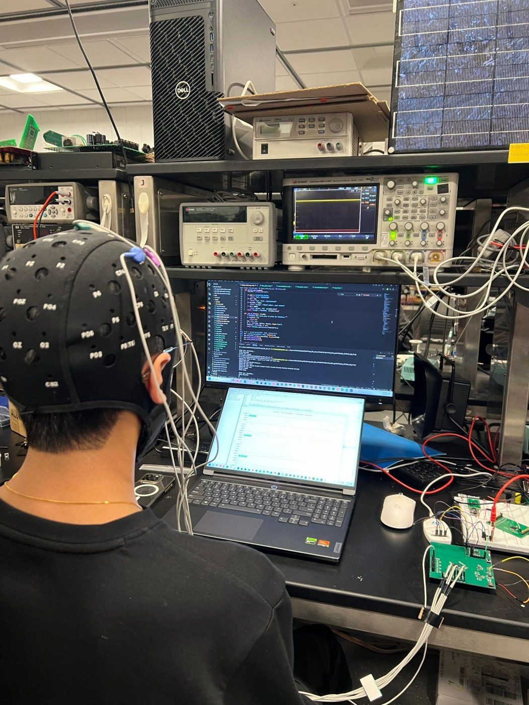
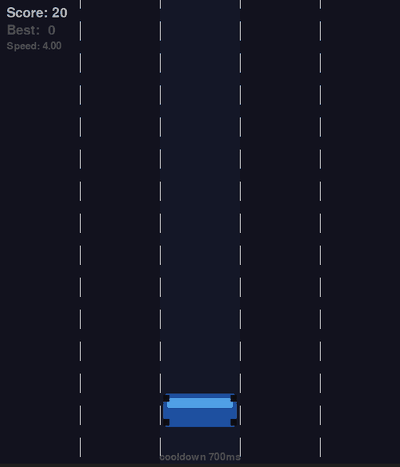
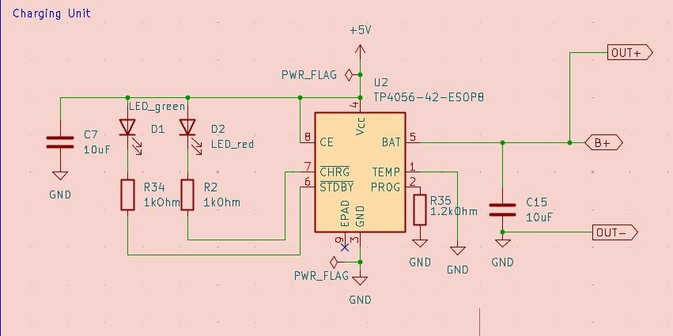
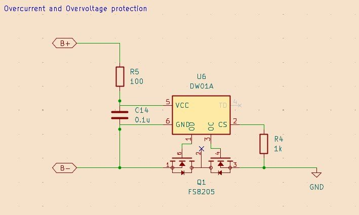
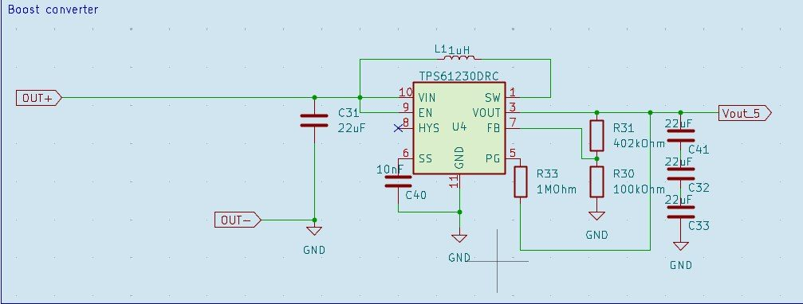
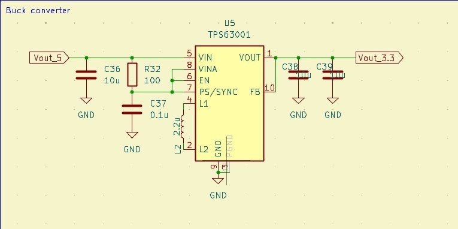
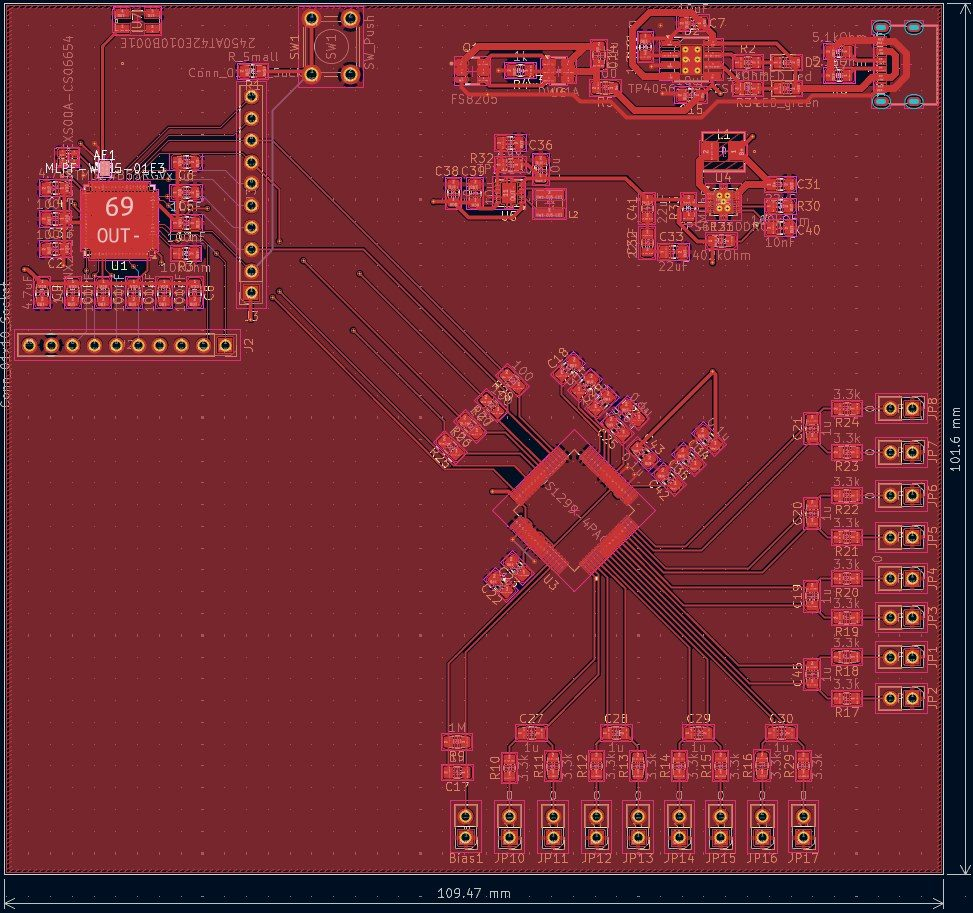
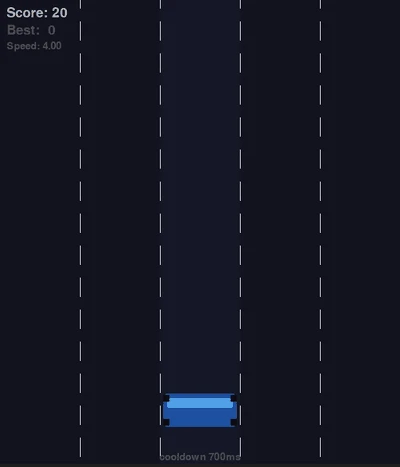
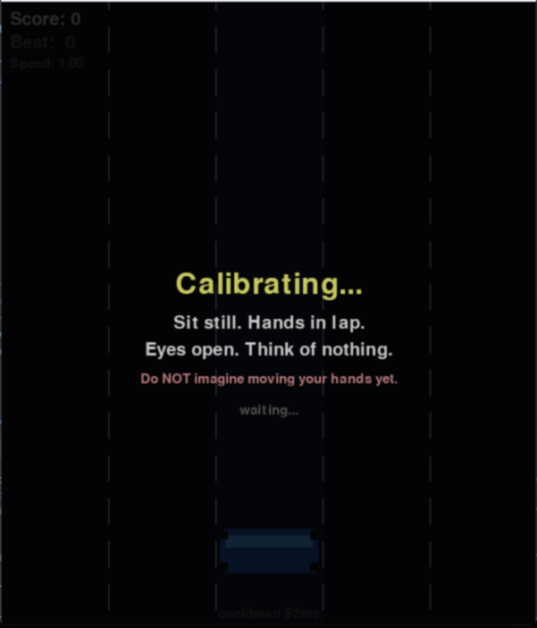
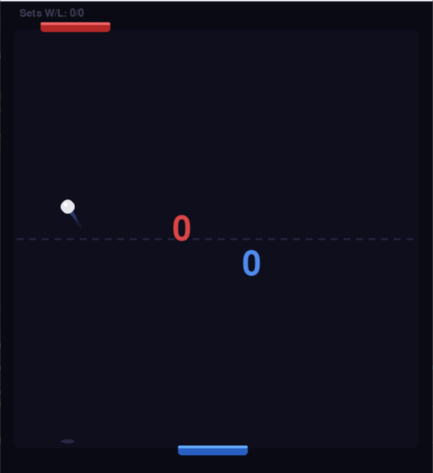

Real-Time Motor Imagery BCI
When you imagine moving one hand, the 8–12 Hz mu rhythm over the opposite side of the motor cortex weakens. This system reads that change from electrodes at C3, Cz and C4. It turns imagined left and right hand movements into controls for a lane-dodging game, with no physical movement at all.
- When
- Jan – May 2026
- Course
- ECE 395 Advanced Digital Projects
- Team
- With Senturran Elangovan
- Builds on
- Drowsiness headband


A recording session, with the electrode cap, the ADS1299 board (bottom right) and live data on screen, and Lane Dodge, the game the classifier controls, in play.
From headband to platform
The headband proved we could capture and process EEG on a microcontroller. This project turns that into a more complete BCI platform. It has a smaller 4-layer board, USB-C charging, a Bluetooth-capable STM32WB55 and classification on the chip.
The output drives a five-lane obstacle-avoidance game in pygame, so you can see the brain–computer loop working.
How it fits together
ADS1299 → STM32 over SPI. STM32 → host over DMA-driven UART at 460,800 baud.
A 4-layer board for microvolt signals
Prototype first
Before the final board we built two small ADS1299 prototype boards to compare electrode setups on volunteers. One used a referential montage, with all channels sharing one reference through SRB1. The other used a sequential (bipolar) montage, measuring each electrode against a nearby one.
With the shared reference, the signals came out almost all flat or saturated. The bipolar montage gave much clearer motor imagery responses, so the final board uses it.
Layout decisions
- Four layers, so microvolt EEG traces, fast digital lines and the 2.4 GHz radio all sit over a close ground reference.
- Trace widths by job: 20–30 mil for power, 10 mil for signals, 6 mil to route out of the fine-pitch 68-pin VFQFPN microcontroller.
- Bluetooth RF section laid out to ST's reference design, with the tiny MLPF-WB55 matching filter and a chip antenna.
- Reflow assembly for the fine-pitch analogue, digital and RF parts.
- Dry comb electrodes (OpenBCI-compatible), which made it quicker to set up repeated volunteer sessions.





Classifying on the chip
The firmware is built around the ADS1299's data-ready interrupt. The interrupt only increments a counter, and the main loop services it, so a slow window never drops a sample. Every 256 samples it processes a window:
- Remove DC offset and reject any window whose RMS crosses ~45 mV, which catches motion, jaw clenches and electrode pops.
- Run Goertzel at five frequencies across 8–12 Hz per channel.
- Average the first five windows into a resting baseline, then normalise each new window against it.
- Classify from the direction ratio below and send a compact
BP,<ratio>,<class>line.
The ratio runs from −1 to +1. Positive means C4 is more suppressed (right-hand imagery); negative means left.
Results go out through a 16-slot circular DMA UART queue, so sending data never stalls sampling. A RECALIBRATE command resets the baseline live, with no board reset.
Python tools around it
Diagnostics
Boot test for ADS1299 init, a 60 Hz noise test with shorted inputs, and a colour-coded electrode contact check using lead-off detection.
Collection
A live three-channel plot with signal-quality indicators, plus a guided recorder that runs 20 trials (prepare, cue, imagery, rest) to CSV.
Training & play
Epoch extraction, CSP + LDA training with leave-subjects-out validation, a neurofeedback dashboard, and the lane game.
Lane Dodge
The game used in the live demo, written in Python with pygame. Imagine moving your left hand and the car moves one lane left; imagine your right and it moves right. The classifier pushes each left/right decision into the game's input queue, and a short cooldown between lane changes stops noisy EEG predictions from making the car jitter. Speed and obstacle frequency ramp up the longer you survive.


Pong 1v1
We planned a two-player version as a stretch goal, with each player's motor imagery moving their own paddle. The game itself works, but it never got a live EEG test. A head-to-head match would have needed a second full EEG rig, which there wasn't time to build. The left/right decisions also weren't yet reliable enough for a fair match, so we put our time into making Lane Dodge solid.

What worked and what didn't
What's next
This project ran into the same problem as the headband: every new wearer needs their own calibration. My Spring 2027 Independent Study at Imperial picks this up. It tests whether EEG foundation models, pretrained on thousands of hours of data, generalise to new subjects and datasets better than the classical decoders used here.
- KiCad 4-layer
- RF layout
- Reflow assembly
- TI ADS1299
- STM32WB55
- TP4056 / DW01A
- USB-C
- C
- SPI · EXTI · DMA UART
- Goertzel DSP
- Python
- CSP + LDA
- pygame
- matplotlib